Թեստ 44
30:00
1. «Ճանապարհային երթևեկության անվտանգության ապահովման մասին» ՀՀ օրենքի համաձայն` Ճանապարհային ոստիկանության ստորաբաժանումներում վարորդի թեկնածուն կարող է մասնակցել գործնական քննությանը, եթե լրացել է նրա`
2. "Ճանապարհային երթևեկության անվտանգության ապահովման մասին" ՀՀ օրենքի համաձայն՝ D կարգի և D1 ենթակարգի տրանսպորտային միջոցներ վարելու իրավունքի վկայական կարող է տրվել՝
3. Ավտոբուսների շահագործումն արգելվում է, եթե՝
4. Տրանսպորտային միջոցների շահագործումն արգելվում է, եթե
5. Խաչմերուկում որտեղ կազմակերպված է շրջանաձև երթևեկություն, պարտավո՞ր է արդյոք ավտոբուսի վարորդը զիջել ճանապարհը բեռնատար ավտոմոբիլին:
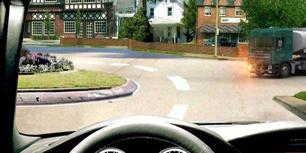
6. Ո՞ր տրանսպորտային միջոցների երթևեկությունն է թույլատրվում այս նշանի ազդեցության ճանապարհներին:
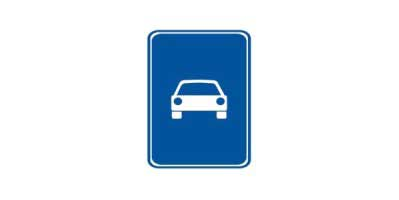
7. Խաչմերուկն առաջինը կանցնի`
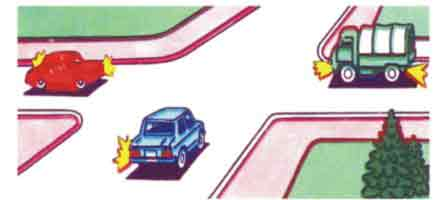
8. Ի՞նչ է նշանակում լուսացույցի դեղին և կարմիր գույների ազդանշանների զուգակցումը:
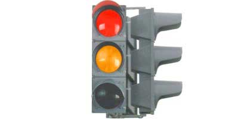
9. Թույլատրվո՞ւմ է թեթև մարդատարի վարորդին սկսել շարժումը
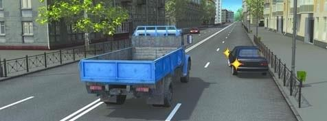
10. Ո՞ր նշանների ազդեցությունն է տարածվում շարժման ուղղությամբ մինչև մոտակա խաչմերուկը
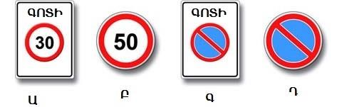
11. Ո՞ր նշանի ազդման գոտում կարող եք երթևեկել 60կմ/ժ արագությամբ
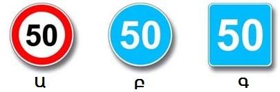
12. Զիջել ճանապարհը պարտավոր ենք
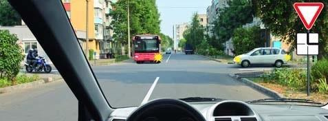
13. Հետադարձ կատարելիս այս իրավիճակում զիջել ճանապարհը մյուս վարորդին
14. Ինչպե՞ս պետք է վարվի վարորդը` մոտենալով խաչմերուկին` «Կանգ-գիծ» գծանշման և լուսացույցի կանաչ ազդանշանի պայմաններում:
15. Քարշակումը մերկասառույցի պայմաններում`
16. Կապույտ գույնի առկայծող փարոսիկ և հատուկ ձայնային ազդանշան միացրած տրանսպորտային միջոց մոտենալու դեպքում վարորդները պետք է`
17. Այս ընդհատվող գծանշումները խաչմերուկի տարածքում ցույց են տալիս
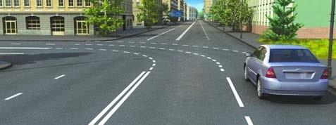
18. Հետադարձն այս խաչմերուկում կատարելիս ո՞ր շրջադարձի ցուցիչը պետք է միացնենք
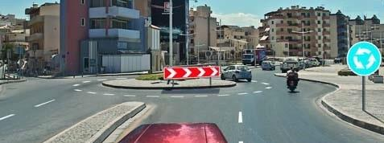
19. Ինչի՞ մասին է տեղեկացնում մոտոցիկլի վարորդի կողմից ձեռքով տրված ազդանշանը:
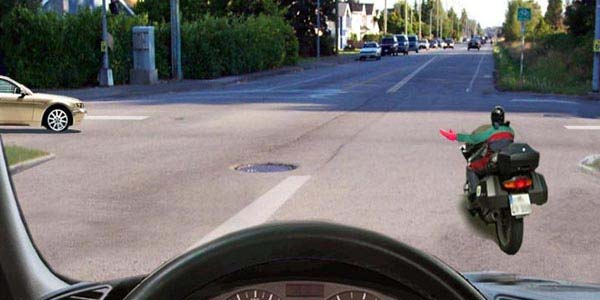